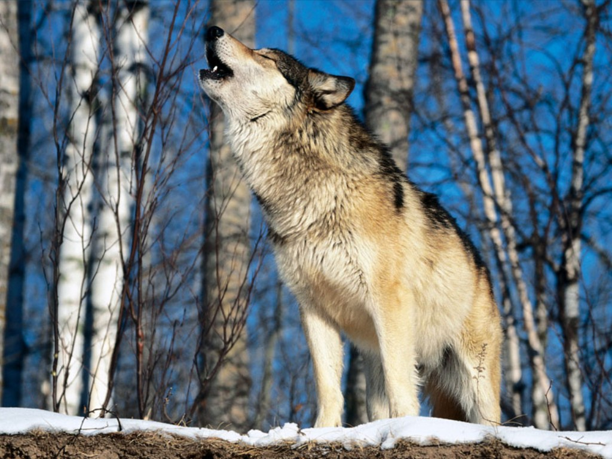
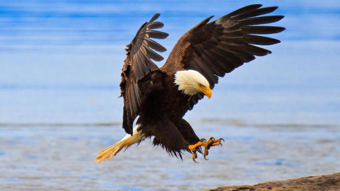
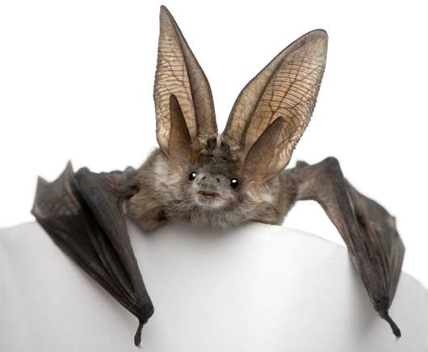
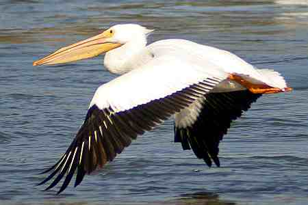
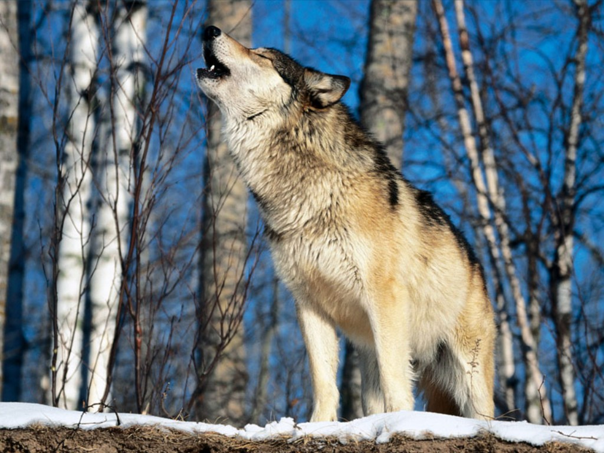
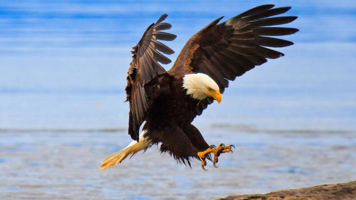
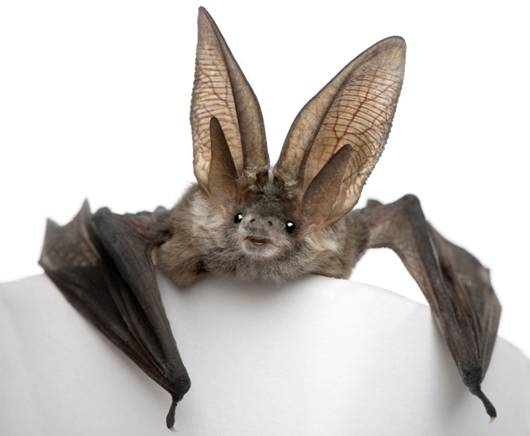
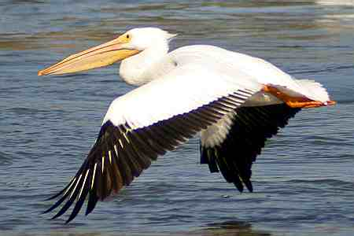

Table of Contents
Click here to visit Introduction
Click here to visit formulas
Click here to visit list of prime ministers of Nepal from past to present
Click here to visit mammals list
Click here to visit birds list
Click here to visit Definition list
Click here to visit photo gallery
Introduction
This is the project summited by Ramit Bhari from software engineering of 2014 batch of Nepal College of Information Technology(NCIT)
(a+b)2=a2+2ab+b2
NaOH+HCl => NaCl + H2O
List of Prime Ministers of Nepal from past to present
- Damodar Pande
- Rana Bahadur Shah
- Bhimsen Thapa
- Rana Jang Pande
- Ranga Nath Poudyal
- Chautariya Puskhar Shah
- Fateh Jung Shah
- Mathabar Singh Thapa
- Jang Bahadur Rana
- Bam Bahadur Kunwar Rana
- Ranodip Singh Kunwar
- Bir Shamsher Jang Bahadur Rana
- Dev Shamsher Jang Bahadur Rana
- Chandra Shamsher Jang Bahadur Rana
- Bhim Shamsher Jang Bahadur Rana
- Juddha Shamsher Jang Bahadur Rana
- Padma Shamsher Jang Bahadur Rana
- Mohan Shamsher Jang Bahadur Rana
- Matrika Prasad Koirala
- Tanka Prasad Acharya
- Kunwar Inderjit Singh
- Subarna Shamsher Rana
- Bishweshwar Prasad Koirala
- Tulsi
Thapa Giri
- Surya Bahadur Thapa
- Kirti Nidhi Bista
- Nagendra Prasad Rijal
- Lokendra Bahadur Chand
- Marich Man Singh Shrestha
- Krishna Prasad Bhattarai
- Girija Prasad Koirala
- Man Mohan Adhikari
- Sher Bahadur Deuba
- Pushpa Kamal Dahal
- Madhav Kumar Nepal
- Jhala Nath Khanal
- Dr. Babu Ram Bhattarai
- Khil Raj Regmi
- Sushil Koirala
- K.P Sharma Oli
List of 5 mammals
- Elephant
- Baboon
- Wolf
- Bat
- Sloth
List of 5 birds
- Eagle
- Sparrow
- Vulture
- Owl
- Pelican
Definition List
- (a) Dragon:
- A dragon is a mythological representation of a reptile. In antiquity, dragons were mostly envisaged as serpents, but since the Middle Ages, it has become common to depict them with legs, resembling a lizard.
- (b) Komodo Dragon:
- The Komodo dragon (Varanus komodoensis), also known as the Komodo monitor, is a large species of lizard found in the Indonesian islands of Komodo, Rinca, Flores, Gili Motang, and Padar. A member of the monitor lizard family Varanidae, it is the largest living species of lizard, growing to a maximum length of 3 metres (10 ft) in rare cases and weighing up to approximately 70 kilograms (150 lb).
- (c) Black Mamba:
- The black mamba (Dendroaspis polylepis) is a venomous snake endemic to sub-Saharan Africa. It takes its common name not from the colour of its scales, but from the interior of its mouth, which is inky-black. It is the longest species of venomous snake on the African continent, with a length typically ranging from 2 meters (6.6 ft) to 3 meters (9.8 ft) and up to 4.3 to 4.5 meters (14.1 to 14.8 ft). It is among the fastest moving snakes in the world, capable of moving at 11 km/h (6.8 mph) over short distances.
Image gallery

 






